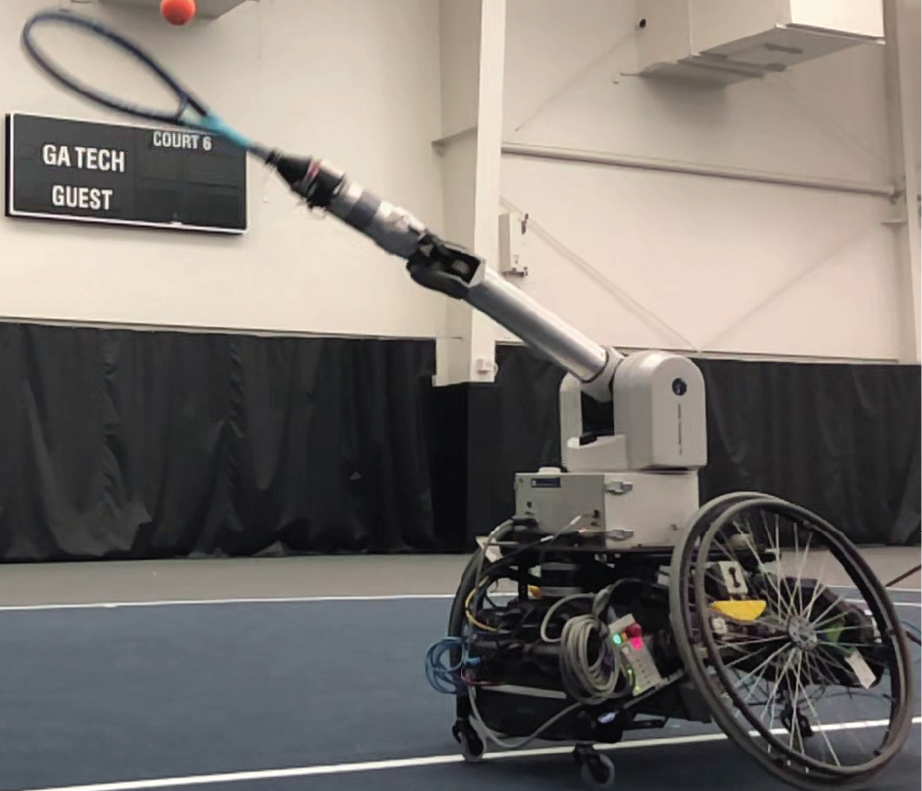

|
Kin Man Lee I'm a Robotics PhD Student in the School of Interactive Computing at Georgia Tech. I'm part of the CORE Robotic Lab, directed by Prof. Matthew Gombolay. Before starting my PhD, I completed my M.S. in Robotics at Georgia Tech and my B.S. in Computer Engineering at the University of Illinois at Urbana-Champaign. I've also spent several years as a software engineer specializing in autonomous vehicle technology. Email / Google Scholar / Twitter / Github |

|
Research
My research interests lie broadly between the intersection of machine learning, controls, and human-robot interaction. I am particularly interested in developing methods for robots to learn agile motions that can actively adapt to human heterogeneity.
I look forward to a future where humans and robots can work together seamlessly in everyday tasks and aspire to contribute towards making this vision a reality!
|
|

|
Athletic Mobile Manipulator System for Robotic Wheelchair Tennis
Zulfiqar Zaidi*, Daniel Martin*, Nathaniel Belles, Viacheslav Zakharov, Arjun Krishna, Kin Man Lee Peter Wagstaff, Sumedh Naik, Matthew Sklar, Sugju Choi, Yoshiki Kakehi, Ruturaj Patil, Divya Mallemadugula, Florian Pesce, Peter Wilson, Wendell Hom, Matan Diamond, Bryan Zhao, Nina Moorman, Rohan Paleja, Letian Chen, Esmaeil Seraj, Matthew Gombolay, IEEE Robotics and Automation Letters (RA-L), 2024 project page / Paper We present ESTHER, an autonomous wheelchair tennis robot that operates on a regulation-sized tennis court. |
|
Adapted from Jon Barron's template. |